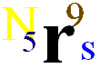
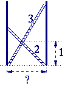

Klik hier om onze sponsor te bezoeken!
Complexe Problemen
|

|
De puzzels zijn gemarkeerd met sterren ( ) die de moeilijkheidsgraad van de betreffende puzzle aangeven.
) die de moeilijkheidsgraad van de betreffende puzzle aangeven.
![[TERUG]](left.gif) terug naar de hoofd-puzzelpagina.
terug naar de hoofd-puzzelpagina.

i.
Acht Koninginnen 
Dit puzzeltje staat bekend onder de naam: chess problem...
De Vraag:
Op hoeveel manieren kun je 8 koninginnen
op een schaakbord plaatsen, zodanig dat geen van hen elkaar kan slaan?
Een Hint:
Volgens de normale schaakregels kan een koningin
een andere koningin slaan, als ze op dezelfde horizontale, verticale, of diagonale lijn
staan (zonder blokkerende speelstukken ertussen).
Het Antwoord:
 Klik hier!...
Klik hier!...
![[OMHOOG]](back.gif) terug naar de index
terug naar de index

ii.
Namen & Nummers
Dankzij Mike en Ruth VanderMeer uit Canada kunnen we
je de volgende puzzel aanbieden:
Vier woorden kunnen bij elkaar op worden geteld tot een
vijfde woord:
mars
venus
uranus
saturn
-------- +
neptune
Elk van de tien letters (m, a, r, s,
v, e, n, u, t, en p) representeert een
cijfer in het bereik van 0 t/m 9, waarbij de cijfers 1 and 6 het meeste voorkomen
in de woorden.
De Vraag:
Welk getal representeert het woord neptune?
Het Antwoord:
Klik hier!...
terug naar de index

iii.
Negentien Nummers Net
Dit is het moeilijkste nummer-netwerk op onze site! Het heeft
negentien cirkels die gevuld moeten worden met de getallen 1 tot
en met 19. Deze getallen moeten zodanig geplaatst worden dat
alle getallen op elke horizontale en op elke diagonale lijn
samen tot dezelfde som optellen.
Waarschuwing: er zijn veel horizontale en diagonale lijnen die
een verschillend aantal cirkels (3, 4 of 5) hebben. Niettemin
moeten al deze sommen gelijk zijn!
De Vraag:
Hoe moeten de negentien getallen in het netwerk geplaatst worden?
Het Antwoord:
Klik hier!...
terug naar de index

iv.
Ladder Laantje
In een steegje staan twee ladders kruislings geplaatst.
De lengte van de ladders is respectievelijk 2 en 3 meter. Ze kruisen elkaar
op één meter boven de grond.
De Vraag:
Wat is de breedte van het steegje?
Het Antwoord:
Klik hier!...
terug naar de index

v.
Kat & Muis
Vier witte speelstukken (de muizen) worden aan de ene kant van een
schaakbord geplaatst, en een zwart speelstuk (de kat) wordt aan de overzijde geplaatst.
Het spel wordt gespeeld volgens de volgende regels:
- Zwart wint als het de overkant bereikt.
- Wit wint als het zwart zodanig blokkeert dat zwart geen enkele zet meer kan doen.
- Het is alleen toegestaan om de speelstukken diagonaal te verzetten (met stapgrootte 1).
- Wit mag alleen vooruit zetten.
- Zwart mag zowel vooruit als achteruit.
- Afwisselend mogen zwart en wit een zet doen (zwart mag beginnen).
De Vraag:
Is dit spel berekenbaar (ofwel: kun je op voorhand al beslissen
wie er kan winnen, ongeacht de zetten die de ander zal doen om dat te voorkomen)?
Het Antwoord:
Klik hier!...
terug naar de index

vi.
Auto's Parkeren
Een straat met een lengte L wordt willekeurig
(één voor één) gevuld met auto's, waarbij de lengte
van een auto de eenheid van L is (dus gelijk aan 1).
De Vraag:
Wat is het verwachte aantal auto's dat (willekeurig)
in de straat kan worden geparkeerd totdat die vol is?
Het Antwoord:
We hebben helaas nog geen oplossing beschikbaar.
terug naar de index

Click Here to Visit our Sponsor
Copyright © 1996-2005. RJE-productions. All rights reserved.